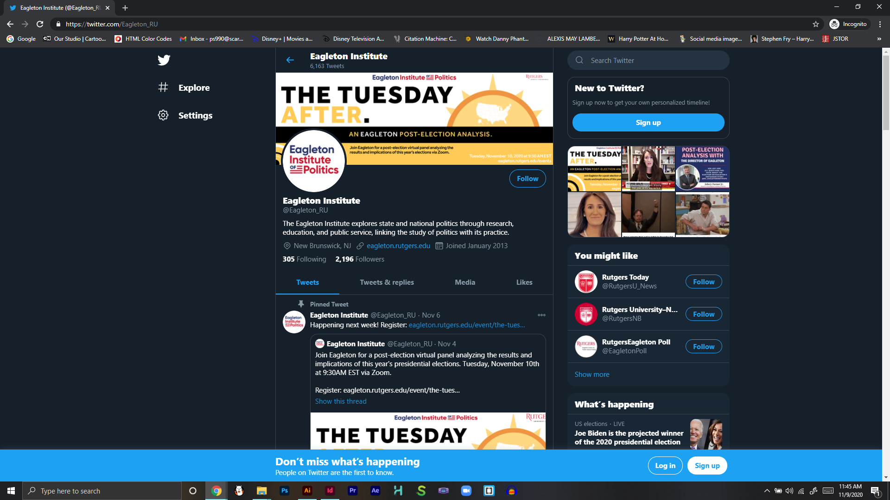
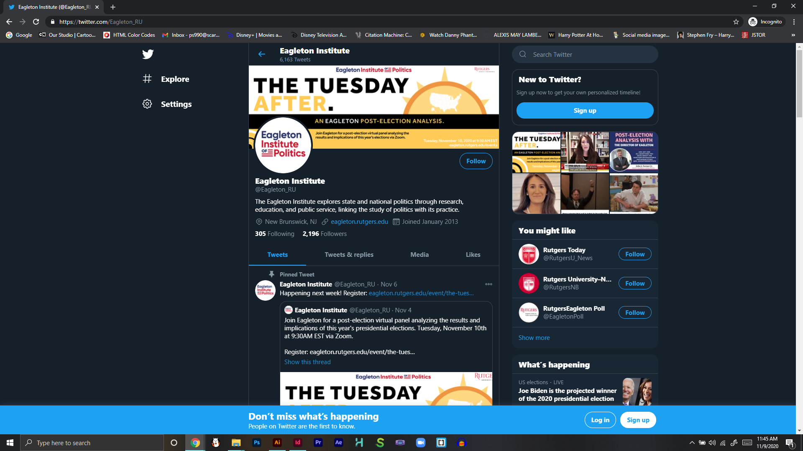
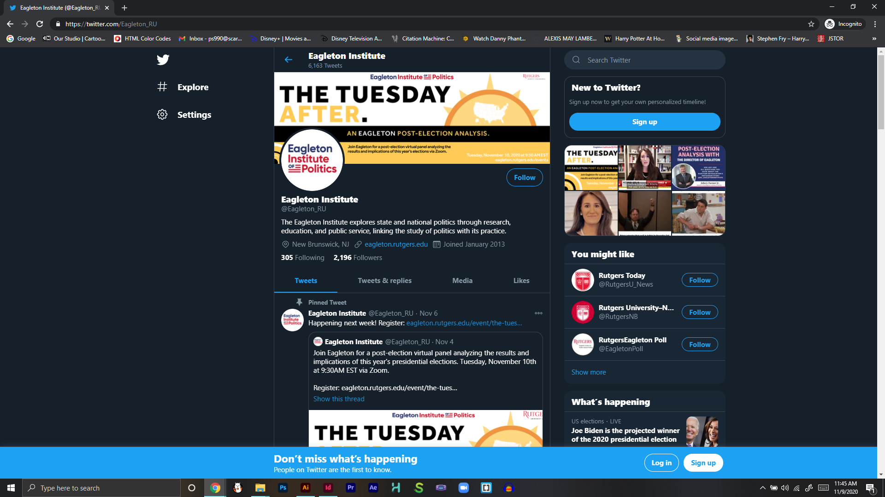

Eagleton Institute of Politics studies how American politics and government work and change, analyzes how the democracy might improve, and promotes political participation and civic engagement. As their graphic design intern, I was given the task to develop their branding and oversee their website designs, social media feed and developments of their videos.
The Tuesday After
After the election results of 2020, an event known as the Tuesday After was to be held to dissect and discuss the results of the election through the Eagleton community, and I was tasked in developing their branding/social media graphics/website graphics for the event.

The Politics of Water and Lead
Dr. Megan Mullin of Duke University and Elyse Pivnick of the Trenton-based community development and environmental organization Isles pulled the curtain on the political structures, roles of local and national government, and system vulnerabilities behind one of America’s most pervasive public health concerns, in this public event I had to design a brand identity for for their social media and website.
How-To-Vote Infomercial
With the election of 2020 approaching at the peak of the pandemic, I was tasked with creating and animating a video that educated people about the different ways to vote during quruantine.


 
